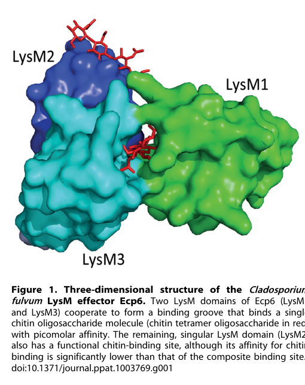

Ecp6 (Extracellular protein 6) is a secreted LysM effector of the biotrophic tomato leaf mould fungus Cladosporium fulvum (Fulvia fulva). The precursor carries a signal peptide followed by three LysM carbohydrate-binding domains; the mature protein is abundantly secreted into the tomato leaf apoplast, with expression induced during infection. Ecp6 binds chitin oligosaccharides selectively. In the crystal structure, LysM1 and LysM3 of the same polypeptide come together (intrachain LysM dimerisation) to form a deeply buried composite groove that holds a chitin oligomer with ultra-high (picomolar) affinity, the highest chitin-binding affinity reported in nature, while LysM2 forms a separate low-micromolar chitin-binding site. Through this binding, Ecp6 sequesters chitin oligosaccharides released from the walls of invading hyphae and outcompetes host LysM pattern recognition receptors such as rice CEBiP, suppressing chitin-triggered immune responses (medium alkalinisation, reactive oxygen burst, defense gene induction) without affecting responses to unrelated elicitors. LysM2 can also suppress chitin-triggered immunity, possibly by perturbing host receptor complexes rather than by sequestration. Unlike the C. fulvum chitin-binding effector Avr4, Ecp6 does not protect fungal hyphae against plant chitinases. Silencing of Ecp6 reduces virulence on tomato, and Ecp6 orthologues are widespread in fungi.
| GO Term | Evidence | Action | Reason |
|---|---|---|---|
|
GO:0005576
extracellular region
|
EXP
PMID:18452583 The novel Cladosporium fulvum lysin motif effector Ecp6 is a... |
ACCEPT |
Summary: Ecp6 was discovered as a protein present in the tomato leaf apoplast during C. fulvum colonization (Bolton et al. 2008), and it is the extracellular site where it sequesters chitin oligosaccharides.
Reason: Direct proteomic identification of the protein among fungal proteins secreted into the apoplast during infection supports extracellular localization; this is where the effector acts. Extracellular region is accurate and consistent with the orthologous-in-role LysM effector Slp1 (genes/PYRO7/slp1).
Supporting Evidence:
PMID:18452583
During tomato leaf colonization, the biotrophic fungus Cladosporium fulvum secretes several effector proteins into the apoplast
PMID:18452583
Three novel C. fulvum proteins were identified: CfPhiA, Ecp6 and Ecp7
PMID:23840930
Considering also the high amount of Ecp6 effector protein that is secreted, especially during the initial stages of the infection
|
|
GO:0005576
extracellular region
|
IEA
GO_REF:0000044 |
ACCEPT |
Summary: Electronic mapping of the UniProt subcellular location "Secreted" (itself experimentally supported by PMID:18452583) to extracellular region.
Reason: The mapping is correct and duplicates the experimental annotation; Ecp6 is a secreted apoplastic effector.
Supporting Evidence:
PMID:18452583
During tomato leaf colonization, the biotrophic fungus Cladosporium fulvum secretes several effector proteins into the apoplast
|
|
GO:0008061
chitin binding
|
IDA
PMID:23840930 Fungal effector Ecp6 outcompetes host immune receptor for ch... |
ACCEPT |
Summary: Ecp6 binds chitin oligosaccharides. The crystal structure and ITC (Sanchez-Vallet et al. 2013) show a composite LysM1-LysM3 groove formed by intrachain dimerisation that binds one chitin oligomer with picomolar affinity (kd = 280 pM), plus a separate low-affinity LysM2 site; earlier work showed that Ecp6 sequesters chitin oligosaccharides during infection (de Jonge et al. 2010).
Reason: Chitin binding is the core molecular activity through which Ecp6 performs its effector role (ligand sequestration), and it is directly measured on the purified protein. It is the activity term, not a perception or signaling term, so it does not carry receptor semantics onto the effector.
Supporting Evidence:
PMID:23840930
The composite LysM1–LysM3 binding site shows ultra-high chitin-binding affinity, thus explaining how LysM effectors outcompete plant host receptors for chitin binding.
PMID:23840930
A first binding phase in which one chitin molecule was bound with ultra-high affinity (kd = 280 pM
PMID:20724636
During infection, Ecp6 sequesters chitin oligosaccharides that are released from the cell walls of invading hyphae to prevent elicitation of host immunity.
file:FULFL/ECP6/ECP6-deep-research-falcon.md
Chitin binding does not make Ecp6 a demonstrated fungal-wall shield.
|
|
GO:0140423
effector-mediated suppression of host pattern-triggered immunity signaling
|
EXP
PMID:23840930 Fungal effector Ecp6 outcompetes host immune receptor for ch... |
ACCEPT |
Summary: Ecp6 and its LysM-domain mutants suppress chitin-oligosaccharide-induced medium alkalinisation in tomato cell suspensions (Sanchez-Vallet et al. 2013), and Ecp6 mediates virulence by perturbing chitin-triggered host immunity (de Jonge et al. 2010). The LysM1-LysM3 groove acts by sequestering the chitin MAMP before receptor engagement; LysM2 suppresses by a mechanism unlikely to involve sequestration, possibly interference with the host receptor complex.
Reason: This is the correct symbiont-side multi-organism process term, backed by experiments on the effector itself, and it matches the term chosen for the M. oryzae LysM effector Slp1 (genes/PYRO7/slp1). Ecp6 performs the work of suppression directly (binding the elicitor and possibly perturbing the receptor complex), so it passes the participation test. It is specific to PTI rather than general innate immunity, and Ecp6 does not suppress responses to unrelated elicitors.
Supporting Evidence:
PMID:23840930
Next, we assessed the ability of the various mutants to suppress chitin-triggered immunity in tomato cells.
PMID:23840930
revealing that LysM2 contains a functional chitin-binding site that contributes to the suppression of chitin-triggered immunity in the cell suspension assay
PMID:20724636
Ecp6 of the fungal plant pathogen Cladosporium fulvum mediates virulence through perturbation of chitin-triggered host immunity.
|
Q: GO:0140423 (suppression of host PTI signaling) vs its parent effector-mediated suppression of host pattern-triggered immunity - Ecp6's main mechanism is MAMP sequestration upstream of receptor activation. Should GO provide a dedicated child such as "effector-mediated suppression of host MAMP recognition" for chitin-scavenging LysM effectors (Ecp6, Slp1, Mg3LysM)?
Q: Does LysM2 of Ecp6 physically interact with host LysM receptors (e.g. tomato CERK1/LYK orthologues) to perturb receptor complex formation, as proposed, or does it act only through low-affinity chitin binding?
Experiment: Test direct binding of Ecp6 (wild type and LysM2 mutants T95R/D121K) to purified ectodomains of tomato chitin receptors (e.g. SlLYK1/SlCERK1 orthologues) in the absence and presence of chitin, to test the receptor-perturbation hypothesis for LysM2.
Experiment: Generate a clean ECP6 knockout in C. fulvum and complement with LysM1-LysM3 groove versus LysM2 binding-site mutants, measuring virulence and host chitin responses to separate the two suppression mechanisms in planta.
The research report should be a detailed narrative explaining the function, biological processes, and localization of the gene product. Citations should be given for all claims.
You should prioritize authoritative reviews and primary scientific literature when conducting research. You can supplement
this with annotations you find in gene/protein databases, but these can be outdated or inaccurate.
We are specifically interested in the primary function of the gene - for enzymes, what reaction is catalyzed, and what is the substrate specificity? For transporters, what is the substrate? For structural proteins or adapters, what is the broader structural role? For signaling molecules, what is the role in the pathway.
We are interested in where in or outside the cell the gene product carries out its function.
We are also interested in the signaling or biochemical pathways in which the gene functions. We are less interested in broad pleiotropic effects, except where these elucidate the precise role.
Include evidence where possible. We are interested in both experimental evidence as well as inference from structure, evolution, or bioinformatic analysis. Precise studies should be prioritized over high-throughput, where available.
ECP6 (UniProt B3VBK9; gene designation CLAFUR5_10085 in the supplied record) encodes a secreted, chitin-binding LysM effector that suppresses chitin-triggered immunity during tomato infection. The identity check is strong: the primary literature identifies Ecp6 in Cladosporium fulvum, explicitly identified in later genomic work as the same tomato-leaf-mold fungus also called Fulvia fulva and Passalora fulva. Its experimentally described secretion and three lysin-motif (LysM) domains match the supplied protein annotation. The accession-to-gene mapping itself comes from the UniProt information supplied with the question, rather than an accession stated in the original functional studies. (zaccaron2024transcriptomeanalysisof pages 2-4, bolton2008thenovelcladosporium pages 3-5, bolton2008thenovelcladosporium pages 10-12)
Ecp6 is a glycan-binding effector, not an enzyme, transporter, or plant signaling receptor. Its immediate biochemical role is to bind chitin-derived oligosaccharides—short chains of β-1,4-linked N-acetylglucosamine (GlcNAc)—that become available when fungal cell-wall chitin is attacked during infection. By restricting access of these immunogenic fragments to plant cell-surface chitin receptors, Ecp6 dampens the pathway known as chitin-triggered pattern immunity and favors fungal colonization. The strongest evidence for this mechanism combines direct glycan-binding measurements, inhibition of chitin-specific plant responses, competition with a plant chitin receptor, and structural analysis of the binding domains. (jonge2010conservedfungallysm pages 1-1, jonge2010conservedfungallysm pages 3-3, jonge2010conservedfungallysm pages 1-2, kombrink2013lysmeffectorssecreted pages 1-2)
The relevant compartment is outside the fungal and tomato cells, principally the tomato leaf apoplast, where the fungus grows around host cells and where released chitin fragments can encounter host receptors. Bolton and colleagues identified Ecp6 directly in fluid isolated from infected tomato-leaf apoplasts: three electrophoretic spots were assigned to Ecp6 using peptide evidence, including four MS/MS-confirmed peptides and a 26-amino-acid N-terminal sequence. The encoded protein was described as a 222-amino-acid precursor and an approximately 199-amino-acid mature protein, consistent with secretion. These observations support an extracellular site of action; they do not require Ecp6 to enter the tomato cytoplasm. (bolton2008thenovelcladosporium pages 2-3, bolton2008thenovelcladosporium pages 3-5, bolton2008thenovelcladosporium pages 6-7)
The pathway can be summarized as fungal-wall chitin → soluble chitin oligomers → plant LysM-containing chitin receptors → early defense responses. Ecp6 acts at the extracellular ligand-perception step, upstream of the measured plant responses, rather than being established as an inhibitor of an intracellular kinase or metabolic reaction. Experimentally, it reduced chitin-evoked medium alkalinization in tomato and tobacco cells, reactive-oxygen-species production in tomato and tobacco leaf tissue, and induction of chitin-responsive genes. It also inhibited chitin-associated oxidative burst and PAL1 expression in rice assays. Its failure to inhibit responses to the unrelated bacterial elicitor flg22 argues against nonspecific shutdown of plant defenses. Rice assays provide mechanistic evidence for competition with a chitin receptor; they do not establish that the rice receptor CEBiP is the corresponding tomato receptor. (jonge2010conservedfungallysm pages 3-3, jonge2010conservedfungallysm pages 2-3)
Ecp6 binds insoluble chitin but, in the tested assays, did not precipitate with deacetylated chitin (chitosan), cellulose, or xylan. In an array of 406 glycans, it bound the represented chitin oligomers (GlcNAc)₃, (GlcNAc)₅, and (GlcNAc)₆, but not the other array glycans, including chitobiose. These results establish a preference for chitin-derived GlcNAc chains under the conditions tested; the behavior of every possible glycan or physiological oligomer length has not been established. (jonge2010conservedfungallysm pages 1-1, jonge2010conservedfungallysm pages 1-2)
The three LysM domains are not simply three equivalent, independent sites. Structural interpretation of Ecp6 shows that LysM1 and LysM3 cooperate within the same protein chain to enclose a chitin oligomer in a composite, deeply buried binding groove with picomolar-range affinity. LysM2 provides a separate chitin-binding site of substantially lower affinity. This architecture provides a physical explanation for competition with host ligand perception: in a rice-membrane experiment, an equimolar concentration of Ecp6 almost completely prevented labeling of the chitin-binding receptor CEBiP by labeled chitin octamer. An expert-review illustration of the Ecp6 structure distinguishes the LysM1–LysM3 composite groove from the separate LysM2 site. (jonge2010conservedfungallysm pages 3-4, sanchezvallet2015thebattlefor pages 5-6, kombrink2013lysmeffectorssecreted pages 1-2, sanchezvallet2020asecretedlysm pages 5-7, kombrink2013lysmeffectorssecreted media 924a60f0)
The affinity measurements need careful interpretation. The original 2010 calorimetry reported apparent dissociation constants of 11.5 µM for (GlcNAc)₄, 8.6 µM for (GlcNAc)₅, 6.4 µM for (GlcNAc)₆, and 3.7 µM for (GlcNAc)₈; the octamer departed from the simple model used for shorter ligands. Subsequent structural work revealed a tightly retained chitin oligomer in the ultrahigh-affinity composite groove even without chitin added during crystallization. The original micromolar measurements therefore should not be presented as the affinity of an empty LysM1–LysM3 composite site, nor should the structural picomolar characterization be silently substituted for the values actually reported in 2010. (kombrink2013lysmeffectorssecreted pages 1-2, sanchezvallet2020asecretedlysm pages 5-7, jonge2010conservedfungallysm pages 1-2)
The composite groove supports chitin sequestration as an experimentally grounded mechanism. There is, however, a qualified mechanistic question: LysM2 can also suppress chitin-induced responses despite binding less tightly. Investigators have proposed that it might interfere with assembly or dimerization of plant chitin-receptor complexes. That additional receptor-assembly mechanism is a hypothesis, not a directly established interaction between Ecp6 and a specified tomato receptor. (sanchezvallet2015thebattlefor pages 5-6, kombrink2013lysmeffectorssecreted pages 1-2)
The original infection study provides genetic evidence in the correct fungus. Three independent C. fulvum Ecp6-RNAi lines expressed approximately 36%, 27%, and 48% of wild-type Ecp6 transcript at the reported measurement point and showed significantly reduced growth in susceptible tomato leaves; one line lacked emerging conidiophores at 10 days after inoculation. Conversely, four independently selected Fusarium oxysporum transformants expressing Ecp6 caused earlier and more severe tomato disease than appropriate comparison strains. Together, partial loss of expression in the native fungus and gain of expression in another fungus support Ecp6 as a virulence factor, although these experiments are not a complete ECP6 deletion-and-rescue analysis. (bolton2008thenovelcladosporium pages 6-7, bolton2008thenovelcladosporium pages 3-5)
Chitin binding does not make Ecp6 a demonstrated fungal-wall shield. In the reported assay, Ecp6 failed to protect Trichoderma viride hyphae against hydrolysis by tomato-leaf preparations containing basic chitinases, even at the tested 10- and 100-µM concentrations. The distinct C. fulvum chitin-binding effector Avr4 did protect in the comparison. Other fungi possess LysM proteins that protect hyphae, but their activities should not be assigned to this F. fulva Ecp6 protein. (jonge2010conservedfungallysm pages 2-3, jonge2010conservedfungallysm pages 1-2, kombrink2013lysmeffectorssecreted pages 1-2, sanchezvallet2020asecretedlysm pages 1-2)
The following evidence summary separates direct observations from interpretation:
| Functional claim | Experimental observation / numeric data | Interpretation and uncertainty | Source and DOI URL |
|---|---|---|---|
| Identity and extracellular localization | Ecp6 was recovered from infected-tomato apoplastic fluid as 2D-PAGE spots 11–13; identification included 4 MS/MS-confirmed peptides and a 26-aa N-terminal sequence. The gene encodes a 222-aa precursor; the predicted mature protein is 199 aa, approximately 21 kDa, and contains three LysM domains. | Strong direct evidence that the target is a secreted Cladosporium fulvum (= Fulvia fulva, Passalora fulva) apoplastic protein. Mapping to UniProt B3VBK9/CLAFUR5_10085 derives from the specified UniProt record rather than the paper itself. | Bolton et al., 2008 (bolton2008thenovelcladosporium pages 10-12, bolton2008thenovelcladosporium pages 3-5). DOI |
| Contribution to virulence | Three independent Ecp6-RNAi lines retained approximately 36%, 27%, and 48% of wild-type transcript abundance. All displayed significantly diminished fungal growth in tomato; the strongest line lacked conidiophores at 10 dpi. Four Fusarium oxysporum transformants expressing Ecp6 produced earlier, more severe tomato disease than controls. | Strong genetic evidence that Ecp6 promotes infection, although RNAi is partial rather than a clean deletion and heterologous expression tests activity in a different fungus. | Bolton et al., 2008 (bolton2008thenovelcladosporium pages 6-7). DOI |
| Chitin-selective lectin activity | Ecp6 precipitated with chitin beads and crab-shell chitin, but not chitosan, cellulose, or xylan. On an array of more than 400 glycans, binding was detected only to (GlcNAc)3, (GlcNAc)5, and (GlcNAc)6, not chitobiose. | Strong biochemical evidence that Ecp6 preferentially recognizes chitin-derived, beta-1,4-linked N-acetylglucosamine oligomers; it is a lectin-like effector, not an enzyme. | de Jonge et al., 2010 (jonge2010conservedfungallysm pages 1-2, jonge2010conservedfungallysm pages 1-1). DOI |
| Binding affinity and three-LysM mechanism | Initial 2010 ITC yielded apparent dissociation constants decreasing from approximately 11.5 micromolar for (GlcNAc)4 to 3.7 micromolar for (GlcNAc)8 and suggested three sites per molecule. Later structural analysis showed that LysM1 and LysM3 form one deeply buried composite groove with picomolar affinity, whereas LysM2 is a separate, lower-affinity site. | The 2010 micromolar values should not be assigned to the unoccupied LysM1–LysM3 groove: later work found chitin retained in that ultrahigh-affinity site during purification. The composite site explains how Ecp6 can outcompete host receptors. | de Jonge et al., 2010; Sánchez-Vallet et al., 2013 (jonge2010conservedfungallysm pages 1-2, sanchezvallet2015thebattlefor pages 5-6, kombrink2013lysmeffectorssecreted pages 1-2, sanchezvallet2020asecretedlysm pages 5-7). 2010 DOI; 2013 DOI |
| Suppression of chitin-triggered immunity | Ecp6 dose-dependently inhibited chitin-induced medium alkalinization and ROS production in tomato and tobacco, reduced chitin-responsive gene induction, and suppressed oxidative burst and PAL1 expression in rice. It did not suppress the response to bacterial flg22. | Strong evidence for selective suppression of chitin-triggered pattern immunity rather than broad inhibition of plant signaling. | de Jonge et al., 2010 (jonge2010conservedfungallysm pages 2-3, jonge2010conservedfungallysm pages 3-3). DOI |
| Competition with a plant chitin receptor | In rice microsomal membranes, an equimolar concentration of Ecp6 almost completely prevented labeling of the LysM receptor CEBiP by biotinylated (GlcNAc)8. | Direct competition supports sequestration of soluble chitin oligomers before receptor engagement. A proposed additional action of LysM2—preventing immune-receptor dimerization—remains an inference rather than direct proof. | de Jonge et al., 2010; later structural analyses (jonge2010conservedfungallysm pages 3-3, jonge2010conservedfungallysm pages 3-4, kombrink2013lysmeffectorssecreted pages 1-2, sanchezvallet2015thebattlefor pages 5-6). 2010 DOI; 2013 DOI |
| No demonstrated protection from tomato chitinases | At 10 or 100 micromolar, Ecp6 failed to protect Trichoderma viride hyphae from hydrolysis by tomato-leaf extracts containing basic chitinases; Avr4 was the protective comparator. | Important negative evidence: the primary supported role of F. fulva Ecp6 is scavenging immunogenic chitin oligomers, not shielding the fungal wall from chitinase hydrolysis. Protective activity of other LysM effectors must not be transferred to Ecp6. | de Jonge et al., 2010; Kombrink and Thomma, 2013 (jonge2010conservedfungallysm pages 1-2, jonge2010conservedfungallysm pages 2-3, kombrink2013lysmeffectorssecreted pages 1-2). 2010 DOI; 2013 DOI |
| Recent alternative-splicing finding | Infection RNA-seq of Race 4 and Race 5 found that the preferentially expressed shortest Ecp6 isoform lacks six amino acids between the signal peptide and first conserved LysM domain. Approximately 40% of protein-coding genes were classified as alternatively spliced, but candidate effectors were not significantly enriched. | Current Ecp6-specific 2024 development. Evidence is transcriptomic: the study did not test whether the six-residue deletion changes secretion, chitin binding, immune suppression, recognition, or virulence. | Zaccaron et al., published December 18, 2024 (zaccaron2024transcriptomeanalysisof pages 5-7, zaccaron2024transcriptomeanalysisof pages 9-11). DOI |
Table: Compact evidence-strength table for the secreted LysM effector Ecp6 from Fulvia fulva, including localization, virulence, chitin specificity, immune suppression, structural mechanism, negative evidence, and the latest 2024 transcriptomic finding.
The most directly relevant recent primary result is the 18 December 2024 infection-transcriptome study of two C. fulvum isolates. Across Race 4 and Race 5 interactions with tomato, the authors found that the preferentially expressed shorter Ecp6 transcript isoform predicts a protein missing six amino acids between its signal peptide and first conserved LysM domain. Their wider analysis classified approximately 40% of protein-coding genes in each isolate as alternatively spliced. This Ecp6 observation adds a plausible source of mature-protein variation, but the study did not demonstrate that the variant changes secretion, chitin affinity, immune suppression, recognition, or virulence. A 2023 review continued to place Ecp6 in the established extracellular chitin-immune-evasion framework rather than establishing a new catalytic activity. (zaccaron2024transcriptomeanalysisof pages 2-4, zaccaron2024transcriptomeanalysisof pages 5-7, zaccaron2024transcriptomeanalysisof pages 9-11, bakhat2023suppressionofchitintriggered pages 4-5)
There is a research and breeding application, not an established Ecp6-based crop treatment. Tomato material described as carrying an Ecp6-recognition specificity, Cf-Ecp6, illustrates that this pathogen effector can also serve as a marker for screening host resistance: recognition-associated immune responses may counter infection, whereas Ecp6-mediated chitin scavenging favors susceptibility when recognition is absent. Effector-based screening of wild tomatoes is an implemented experimental approach to finding resistance candidates. The cited work does not establish that a particular cloned Cf-Ecp6 gene, an Ecp6-targeted field intervention, or a commercial Ecp6-based resistant cultivar has been deployed. More generally, the 2024 BdLM1 results concern a different fungus and protein, not B3VBK9. (mesarich2018specifichypersensitiveresponse–associated pages 5-7, mesarich2018specifichypersensitiveresponse–associated pages 1-3)
A historical survey of 50 C. fulvum strains found Ecp6 allelic variants in seven; among the five reported polymorphisms, one was amino-acid-changing. This supports relative sequence conservation in that sampled collection, but cannot establish global invariance or predict whether the newly reported splice variants are functionally equivalent. (zaccaron2024transcriptomeanalysisof pages 9-11, bolton2008thenovelcladosporium pages 10-12)
For B3VBK9/ECP6, the most defensible annotation is: secreted, apoplast-acting fungal LysM lectin/effector that binds chitin oligosaccharides and suppresses plant chitin-triggered immune perception, thereby contributing to tomato colonization. Binding specificity, extracellular detection, defense suppression, and virulence contribution have direct experimental support. Intrachain LysM1–LysM3 cooperation explains particularly strong ligand capture; a separate LysM2-dependent effect on host receptor assembly remains proposed. Catalysis, transport, cytoplasmic host localization, and chitinase-protective wall shielding should not be assigned as established functions of this protein. (bolton2008thenovelcladosporium pages 6-7, bolton2008thenovelcladosporium pages 3-5, jonge2010conservedfungallysm pages 1-2, sanchezvallet2015thebattlefor pages 5-6, kombrink2013lysmeffectorssecreted pages 1-2)
References
(zaccaron2024transcriptomeanalysisof pages 2-4): Alex Z. Zaccaron, Li-Hung Chen, and Ioannis Stergiopoulos. Transcriptome analysis of two isolates of the tomato pathogen cladosporium fulvum, uncovers genome-wide patterns of alternative splicing during a host infection cycle. PLOS Pathogens, 20(12):e1012791, Dec 2024. URL: https://doi.org/10.1371/journal.ppat.1012791, doi:10.1371/journal.ppat.1012791. This article has 6 citations and is from a highest quality peer-reviewed journal.
(bolton2008thenovelcladosporium pages 3-5): Melvin D. Bolton, H. Peter Van Esse, Jack H. Vossen, Ronnie De Jonge, Ioannis Stergiopoulos, Iris J. E. Stulemeijer, Grardy C. M. Van Den Berg, Orlando Borrás‐Hidalgo, Henk L. Dekker, Chris G. De Koster, Pierre J. G. M. De Wit, Matthieu H. A. J. Joosten, and Bart P. H. J. Thomma. The novel cladosporium fulvum lysin motif effector ecp6 is a virulence factor with orthologues in other fungal species. Molecular Microbiology, 69:119-136, Jul 2008. URL: https://doi.org/10.1111/j.1365-2958.2008.06270.x, doi:10.1111/j.1365-2958.2008.06270.x. This article has 404 citations and is from a domain leading peer-reviewed journal.
(bolton2008thenovelcladosporium pages 10-12): Melvin D. Bolton, H. Peter Van Esse, Jack H. Vossen, Ronnie De Jonge, Ioannis Stergiopoulos, Iris J. E. Stulemeijer, Grardy C. M. Van Den Berg, Orlando Borrás‐Hidalgo, Henk L. Dekker, Chris G. De Koster, Pierre J. G. M. De Wit, Matthieu H. A. J. Joosten, and Bart P. H. J. Thomma. The novel cladosporium fulvum lysin motif effector ecp6 is a virulence factor with orthologues in other fungal species. Molecular Microbiology, 69:119-136, Jul 2008. URL: https://doi.org/10.1111/j.1365-2958.2008.06270.x, doi:10.1111/j.1365-2958.2008.06270.x. This article has 404 citations and is from a domain leading peer-reviewed journal.
(jonge2010conservedfungallysm pages 1-1): Ronnie de Jonge, H. Peter van Esse, Anja Kombrink, Tomonori Shinya, Yoshitake Desaki, Ralph Bours, Sander van der Krol, Naoto Shibuya, Matthieu H. A. J. Joosten, and Bart P. H. J. Thomma. Conserved fungal lysm effector ecp6 prevents chitin-triggered immunity in plants. Science, 329:953-955, Aug 2010. URL: https://doi.org/10.1126/science.1190859, doi:10.1126/science.1190859. This article has 989 citations and is from a highest quality peer-reviewed journal.
(jonge2010conservedfungallysm pages 3-3): Ronnie de Jonge, H. Peter van Esse, Anja Kombrink, Tomonori Shinya, Yoshitake Desaki, Ralph Bours, Sander van der Krol, Naoto Shibuya, Matthieu H. A. J. Joosten, and Bart P. H. J. Thomma. Conserved fungal lysm effector ecp6 prevents chitin-triggered immunity in plants. Science, 329:953-955, Aug 2010. URL: https://doi.org/10.1126/science.1190859, doi:10.1126/science.1190859. This article has 989 citations and is from a highest quality peer-reviewed journal.
(jonge2010conservedfungallysm pages 1-2): Ronnie de Jonge, H. Peter van Esse, Anja Kombrink, Tomonori Shinya, Yoshitake Desaki, Ralph Bours, Sander van der Krol, Naoto Shibuya, Matthieu H. A. J. Joosten, and Bart P. H. J. Thomma. Conserved fungal lysm effector ecp6 prevents chitin-triggered immunity in plants. Science, 329:953-955, Aug 2010. URL: https://doi.org/10.1126/science.1190859, doi:10.1126/science.1190859. This article has 989 citations and is from a highest quality peer-reviewed journal.
(kombrink2013lysmeffectorssecreted pages 1-2): Anja Kombrink and Bart P. H. J. Thomma. Lysm effectors: secreted proteins supporting fungal life. PLoS Pathogens, 9:e1003769, Dec 2013. URL: https://doi.org/10.1371/journal.ppat.1003769, doi:10.1371/journal.ppat.1003769. This article has 228 citations and is from a highest quality peer-reviewed journal.
(bolton2008thenovelcladosporium pages 2-3): Melvin D. Bolton, H. Peter Van Esse, Jack H. Vossen, Ronnie De Jonge, Ioannis Stergiopoulos, Iris J. E. Stulemeijer, Grardy C. M. Van Den Berg, Orlando Borrás‐Hidalgo, Henk L. Dekker, Chris G. De Koster, Pierre J. G. M. De Wit, Matthieu H. A. J. Joosten, and Bart P. H. J. Thomma. The novel cladosporium fulvum lysin motif effector ecp6 is a virulence factor with orthologues in other fungal species. Molecular Microbiology, 69:119-136, Jul 2008. URL: https://doi.org/10.1111/j.1365-2958.2008.06270.x, doi:10.1111/j.1365-2958.2008.06270.x. This article has 404 citations and is from a domain leading peer-reviewed journal.
(bolton2008thenovelcladosporium pages 6-7): Melvin D. Bolton, H. Peter Van Esse, Jack H. Vossen, Ronnie De Jonge, Ioannis Stergiopoulos, Iris J. E. Stulemeijer, Grardy C. M. Van Den Berg, Orlando Borrás‐Hidalgo, Henk L. Dekker, Chris G. De Koster, Pierre J. G. M. De Wit, Matthieu H. A. J. Joosten, and Bart P. H. J. Thomma. The novel cladosporium fulvum lysin motif effector ecp6 is a virulence factor with orthologues in other fungal species. Molecular Microbiology, 69:119-136, Jul 2008. URL: https://doi.org/10.1111/j.1365-2958.2008.06270.x, doi:10.1111/j.1365-2958.2008.06270.x. This article has 404 citations and is from a domain leading peer-reviewed journal.
(jonge2010conservedfungallysm pages 2-3): Ronnie de Jonge, H. Peter van Esse, Anja Kombrink, Tomonori Shinya, Yoshitake Desaki, Ralph Bours, Sander van der Krol, Naoto Shibuya, Matthieu H. A. J. Joosten, and Bart P. H. J. Thomma. Conserved fungal lysm effector ecp6 prevents chitin-triggered immunity in plants. Science, 329:953-955, Aug 2010. URL: https://doi.org/10.1126/science.1190859, doi:10.1126/science.1190859. This article has 989 citations and is from a highest quality peer-reviewed journal.
(jonge2010conservedfungallysm pages 3-4): Ronnie de Jonge, H. Peter van Esse, Anja Kombrink, Tomonori Shinya, Yoshitake Desaki, Ralph Bours, Sander van der Krol, Naoto Shibuya, Matthieu H. A. J. Joosten, and Bart P. H. J. Thomma. Conserved fungal lysm effector ecp6 prevents chitin-triggered immunity in plants. Science, 329:953-955, Aug 2010. URL: https://doi.org/10.1126/science.1190859, doi:10.1126/science.1190859. This article has 989 citations and is from a highest quality peer-reviewed journal.
(sanchezvallet2015thebattlefor pages 5-6): Andrea Sánchez-Vallet, Jeroen R. Mesters, and Bart P.H.J. Thomma. The battle for chitin recognition in plant-microbe interactions. FEMS microbiology reviews, 39 2:171-83, Mar 2015. URL: https://doi.org/10.1093/femsre/fuu003, doi:10.1093/femsre/fuu003. This article has 363 citations and is from a domain leading peer-reviewed journal.
(sanchezvallet2020asecretedlysm pages 5-7): Andrea Sánchez-Vallet, Hui Tian, Luis Rodriguez-Moreno, Dirk-Jan Valkenburg, Raspudin Saleem-Batcha, Stephan Wawra, Anja Kombrink, Leonie Verhage, Ronnie de Jonge, H. Peter van Esse, Alga Zuccaro, Daniel Croll, Jeroen R. Mesters, and Bart P. H. J. Thomma. A secreted lysm effector protects fungal hyphae through chitin-dependent homodimer polymerization. PLOS Pathogens, 16:e1008652, Jun 2020. URL: https://doi.org/10.1371/journal.ppat.1008652, doi:10.1371/journal.ppat.1008652. This article has 99 citations and is from a highest quality peer-reviewed journal.
(kombrink2013lysmeffectorssecreted media 924a60f0): Anja Kombrink and Bart P. H. J. Thomma. Lysm effectors: secreted proteins supporting fungal life. PLoS Pathogens, 9:e1003769, Dec 2013. URL: https://doi.org/10.1371/journal.ppat.1003769, doi:10.1371/journal.ppat.1003769. This article has 228 citations and is from a highest quality peer-reviewed journal.
(sanchezvallet2020asecretedlysm pages 1-2): Andrea Sánchez-Vallet, Hui Tian, Luis Rodriguez-Moreno, Dirk-Jan Valkenburg, Raspudin Saleem-Batcha, Stephan Wawra, Anja Kombrink, Leonie Verhage, Ronnie de Jonge, H. Peter van Esse, Alga Zuccaro, Daniel Croll, Jeroen R. Mesters, and Bart P. H. J. Thomma. A secreted lysm effector protects fungal hyphae through chitin-dependent homodimer polymerization. PLOS Pathogens, 16:e1008652, Jun 2020. URL: https://doi.org/10.1371/journal.ppat.1008652, doi:10.1371/journal.ppat.1008652. This article has 99 citations and is from a highest quality peer-reviewed journal.
(zaccaron2024transcriptomeanalysisof pages 5-7): Alex Z. Zaccaron, Li-Hung Chen, and Ioannis Stergiopoulos. Transcriptome analysis of two isolates of the tomato pathogen cladosporium fulvum, uncovers genome-wide patterns of alternative splicing during a host infection cycle. PLOS Pathogens, 20(12):e1012791, Dec 2024. URL: https://doi.org/10.1371/journal.ppat.1012791, doi:10.1371/journal.ppat.1012791. This article has 6 citations and is from a highest quality peer-reviewed journal.
(zaccaron2024transcriptomeanalysisof pages 9-11): Alex Z. Zaccaron, Li-Hung Chen, and Ioannis Stergiopoulos. Transcriptome analysis of two isolates of the tomato pathogen cladosporium fulvum, uncovers genome-wide patterns of alternative splicing during a host infection cycle. PLOS Pathogens, 20(12):e1012791, Dec 2024. URL: https://doi.org/10.1371/journal.ppat.1012791, doi:10.1371/journal.ppat.1012791. This article has 6 citations and is from a highest quality peer-reviewed journal.
(bakhat2023suppressionofchitintriggered pages 4-5): Nisrine Bakhat, Alejandra Vielba-Fernández, Isabel Padilla-Roji, Jesús Martínez-Cruz, Álvaro Polonio, Dolores Fernández-Ortuño, and Alejandro Pérez-García. Suppression of chitin-triggered immunity by plant fungal pathogens: a case study of the cucurbit powdery mildew fungus podosphaera xanthii. Journal of Fungi, 9:771, Jul 2023. URL: https://doi.org/10.3390/jof9070771, doi:10.3390/jof9070771. This article has 45 citations.
(mesarich2018specifichypersensitiveresponse–associated pages 5-7): Carl H. Mesarich, Bilal Ӧkmen, Hanna Rovenich, Scott A. Griffiths, Changchun Wang, Mansoor Karimi Jashni, Aleksandar Mihajlovski, Jérôme Collemare, Lukas Hunziker, Cecilia H. Deng, Ate van der Burgt, Henriek G. Beenen, Matthew D. Templeton, Rosie E. Bradshaw, and Pierre J. G. M. de Wit. Specific hypersensitive response–associated recognition of new apoplastic effectors from cladosporium fulvum in wild tomato. Molecular Plant-Microbe Interactions®, 31:145-162, Jan 2018. URL: https://doi.org/10.1094/mpmi-05-17-0114-fi, doi:10.1094/mpmi-05-17-0114-fi. This article has 80 citations.
(mesarich2018specifichypersensitiveresponse–associated pages 1-3): Carl H. Mesarich, Bilal Ӧkmen, Hanna Rovenich, Scott A. Griffiths, Changchun Wang, Mansoor Karimi Jashni, Aleksandar Mihajlovski, Jérôme Collemare, Lukas Hunziker, Cecilia H. Deng, Ate van der Burgt, Henriek G. Beenen, Matthew D. Templeton, Rosie E. Bradshaw, and Pierre J. G. M. de Wit. Specific hypersensitive response–associated recognition of new apoplastic effectors from cladosporium fulvum in wild tomato. Molecular Plant-Microbe Interactions®, 31:145-162, Jan 2018. URL: https://doi.org/10.1094/mpmi-05-17-0114-fi, doi:10.1094/mpmi-05-17-0114-fi. This article has 80 citations.
(bolton2008thenovelcladosporium pages 1-2): Melvin D. Bolton, H. Peter Van Esse, Jack H. Vossen, Ronnie De Jonge, Ioannis Stergiopoulos, Iris J. E. Stulemeijer, Grardy C. M. Van Den Berg, Orlando Borrás‐Hidalgo, Henk L. Dekker, Chris G. De Koster, Pierre J. G. M. De Wit, Matthieu H. A. J. Joosten, and Bart P. H. J. Thomma. The novel cladosporium fulvum lysin motif effector ecp6 is a virulence factor with orthologues in other fungal species. Molecular Microbiology, 69:119-136, Jul 2008. URL: https://doi.org/10.1111/j.1365-2958.2008.06270.x, doi:10.1111/j.1365-2958.2008.06270.x. This article has 404 citations and is from a domain leading peer-reviewed journal.

id: B3VBK9
gene_symbol: ECP6
product_type: PROTEIN
status: COMPLETE
taxon:
id: NCBITaxon:5499
label: Fulvia fulva
description: >-
Ecp6 (Extracellular protein 6) is a secreted LysM effector of the biotrophic tomato leaf mould fungus
Cladosporium fulvum (Fulvia fulva). The precursor carries a signal peptide followed by three LysM
carbohydrate-binding domains; the mature protein is abundantly secreted into the tomato leaf apoplast,
with expression induced during infection. Ecp6 binds chitin oligosaccharides selectively. In the crystal
structure, LysM1 and LysM3 of the same polypeptide come together (intrachain LysM dimerisation) to form a
deeply buried composite groove that holds a chitin oligomer with ultra-high (picomolar) affinity, the
highest chitin-binding affinity reported in nature, while LysM2 forms a separate low-micromolar chitin-binding
site. Through this binding, Ecp6 sequesters chitin oligosaccharides released from the walls of invading
hyphae and outcompetes host LysM pattern recognition receptors such as rice CEBiP, suppressing
chitin-triggered immune responses (medium alkalinisation, reactive oxygen burst, defense gene induction)
without affecting responses to unrelated elicitors. LysM2 can also suppress chitin-triggered immunity,
possibly by perturbing host receptor complexes rather than by sequestration. Unlike the C. fulvum
chitin-binding effector Avr4, Ecp6 does not protect fungal hyphae against plant chitinases. Silencing of
Ecp6 reduces virulence on tomato, and Ecp6 orthologues are widespread in fungi.
existing_annotations:
- term:
id: GO:0005576
label: extracellular region
evidence_type: EXP
original_reference_id: PMID:18452583
qualifier: located_in
review:
summary: >-
Ecp6 was discovered as a protein present in the tomato leaf apoplast during C. fulvum colonization
(Bolton et al. 2008), and it is the extracellular site where it sequesters chitin oligosaccharides.
action: ACCEPT
reason: >-
Direct proteomic identification of the protein among fungal proteins secreted into the apoplast during
infection supports extracellular localization; this is where the effector acts. Extracellular region is
accurate and consistent with the orthologous-in-role LysM effector Slp1 (genes/PYRO7/slp1).
supported_by:
- reference_id: PMID:18452583
supporting_text: During tomato leaf colonization, the biotrophic fungus Cladosporium fulvum secretes
several effector proteins into the apoplast
- reference_id: PMID:18452583
supporting_text: "Three novel C. fulvum proteins were identified: CfPhiA, Ecp6 and Ecp7"
- reference_id: PMID:23840930
supporting_text: Considering also the high amount of Ecp6 effector protein that is secreted, especially
during the initial stages of the infection
- term:
id: GO:0005576
label: extracellular region
evidence_type: IEA
original_reference_id: GO_REF:0000044
qualifier: located_in
supporting_entities:
- UniProtKB-SubCell:SL-0243
review:
summary: >-
Electronic mapping of the UniProt subcellular location "Secreted" (itself experimentally supported by
PMID:18452583) to extracellular region.
action: ACCEPT
reason: >-
The mapping is correct and duplicates the experimental annotation; Ecp6 is a secreted apoplastic effector.
supported_by:
- reference_id: PMID:18452583
supporting_text: During tomato leaf colonization, the biotrophic fungus Cladosporium fulvum secretes
several effector proteins into the apoplast
- term:
id: GO:0008061
label: chitin binding
evidence_type: IDA
original_reference_id: PMID:23840930
qualifier: enables
review:
summary: >-
Ecp6 binds chitin oligosaccharides. The crystal structure and ITC (Sanchez-Vallet et al. 2013) show a
composite LysM1-LysM3 groove formed by intrachain dimerisation that binds one chitin oligomer with
picomolar affinity (kd = 280 pM), plus a separate low-affinity LysM2 site; earlier work showed that
Ecp6 sequesters chitin oligosaccharides during infection (de Jonge et al. 2010).
action: ACCEPT
reason: >-
Chitin binding is the core molecular activity through which Ecp6 performs its effector role (ligand
sequestration), and it is directly measured on the purified protein. It is the activity term, not a
perception or signaling term, so it does not carry receptor semantics onto the effector.
supported_by:
- reference_id: PMID:23840930
supporting_text: The composite LysM1–LysM3 binding site shows ultra-high chitin-binding affinity, thus
explaining how LysM effectors outcompete plant host receptors for chitin binding.
- reference_id: PMID:23840930
supporting_text: A first binding phase in which one chitin molecule was bound with ultra-high affinity
(kd = 280 pM
- reference_id: PMID:20724636
supporting_text: During infection, Ecp6 sequesters chitin oligosaccharides that are released from the
cell walls of invading hyphae to prevent elicitation of host immunity.
- reference_id: file:FULFL/ECP6/ECP6-deep-research-falcon.md
supporting_text: Chitin binding does not make Ecp6 a demonstrated fungal-wall shield.
- term:
id: GO:0140423
label: effector-mediated suppression of host pattern-triggered immunity signaling
evidence_type: EXP
original_reference_id: PMID:23840930
qualifier: involved_in
review:
summary: >-
Ecp6 and its LysM-domain mutants suppress chitin-oligosaccharide-induced medium alkalinisation in tomato
cell suspensions (Sanchez-Vallet et al. 2013), and Ecp6 mediates virulence by perturbing chitin-triggered
host immunity (de Jonge et al. 2010). The LysM1-LysM3 groove acts by sequestering the chitin MAMP before
receptor engagement; LysM2 suppresses by a mechanism unlikely to involve sequestration, possibly
interference with the host receptor complex.
action: ACCEPT
reason: >-
This is the correct symbiont-side multi-organism process term, backed by experiments on the effector
itself, and it matches the term chosen for the M. oryzae LysM effector Slp1 (genes/PYRO7/slp1). Ecp6
performs the work of suppression directly (binding the elicitor and possibly perturbing the receptor
complex), so it passes the participation test. It is specific to PTI rather than general innate
immunity, and Ecp6 does not suppress responses to unrelated elicitors.
supported_by:
- reference_id: PMID:23840930
supporting_text: Next, we assessed the ability of the various mutants to suppress chitin-triggered
immunity in tomato cells.
- reference_id: PMID:23840930
supporting_text: revealing that LysM2 contains a functional chitin-binding site that contributes to the
suppression of chitin-triggered immunity in the cell suspension assay
- reference_id: PMID:20724636
supporting_text: Ecp6 of the fungal plant pathogen Cladosporium fulvum mediates virulence through
perturbation of chitin-triggered host immunity.
core_functions:
- description: >-
Secreted apoplastic LysM effector that binds chitin oligosaccharides released from the fungal cell wall
with ultra-high affinity through an intrachain LysM1-LysM3 composite groove, sequestering them so they are
not perceived by host LysM pattern recognition receptors, thereby suppressing chitin-triggered
pattern-triggered immunity and promoting colonization of tomato.
molecular_function:
id: GO:0008061
label: chitin binding
directly_involved_in:
- id: GO:0140423
label: effector-mediated suppression of host pattern-triggered immunity signaling
locations:
- id: GO:0005576
label: extracellular region
supported_by:
- reference_id: PMID:23840930
supporting_text: The composite LysM1–LysM3 binding site shows ultra-high chitin-binding affinity, thus
explaining how LysM effectors outcompete plant host receptors for chitin binding.
- reference_id: PMID:20724636
supporting_text: During infection, Ecp6 sequesters chitin oligosaccharides that are released from the
cell walls of invading hyphae to prevent elicitation of host immunity.
- reference_id: PMID:18452583
supporting_text: by RNA interference (RNAi)-mediated gene silencing we demonstrate that Ecp6 is instrumental
for C. fulvum virulence on tomato
proposed_new_terms: []
suggested_questions:
- question: GO:0140423 (suppression of host PTI signaling) vs its parent effector-mediated suppression of host
pattern-triggered immunity - Ecp6's main mechanism is MAMP sequestration upstream of receptor activation.
Should GO provide a dedicated child such as "effector-mediated suppression of host MAMP recognition" for
chitin-scavenging LysM effectors (Ecp6, Slp1, Mg3LysM)?
- question: Does LysM2 of Ecp6 physically interact with host LysM receptors (e.g. tomato CERK1/LYK orthologues)
to perturb receptor complex formation, as proposed, or does it act only through low-affinity chitin binding?
suggested_experiments:
- description: Test direct binding of Ecp6 (wild type and LysM2 mutants T95R/D121K) to purified ectodomains of
tomato chitin receptors (e.g. SlLYK1/SlCERK1 orthologues) in the absence and presence of chitin, to test the
receptor-perturbation hypothesis for LysM2.
- description: Generate a clean ECP6 knockout in C. fulvum and complement with LysM1-LysM3 groove versus LysM2
binding-site mutants, measuring virulence and host chitin responses to separate the two suppression mechanisms
in planta.
references:
- id: GO_REF:0000044
title: Gene Ontology annotation based on UniProtKB/Swiss-Prot Subcellular Location
vocabulary mapping, accompanied by conservative changes to GO terms applied by
UniProt
findings: []
- id: PMID:18452583
title: The novel Cladosporium fulvum lysin motif effector Ecp6 is a virulence factor
with orthologues in other fungal species.
findings: []
reference_review:
relevance: HIGH
correctness: VERIFIED
review_notes: Abstract-only cache. Discovery of Ecp6 in the infected tomato apoplast, LysM domains, RNAi
silencing reduces virulence; supports extracellular localization.
- id: PMID:23840930
title: Fungal effector Ecp6 outcompetes host immune receptor for chitin binding through
intrachain LysM dimerization.
findings: []
reference_review:
relevance: HIGH
correctness: VERIFIED
review_notes: Full text cached (PMC3700227). Crystal structure, ITC (280 pM LysM1-LysM3 groove), LysM
mutant suppression assays in tomato cells; supports chitin binding and PTI suppression.
- id: PMID:20724636
title: Conserved fungal LysM effector Ecp6 prevents chitin-triggered immunity in plants.
findings: []
reference_review:
relevance: HIGH
correctness: VERIFIED
review_notes: PMID verified via PubMed metadata; abstract-only cache. Establishes chitin sequestration
and suppression of chitin-triggered immunity; full text (glycan array, CEBiP competition, no chitinase
protection) not cached.
- id: file:FULFL/ECP6/ECP6-deep-research-falcon.md
title: Deep research report on Fulvia fulva ECP6 (Falcon)
findings: []